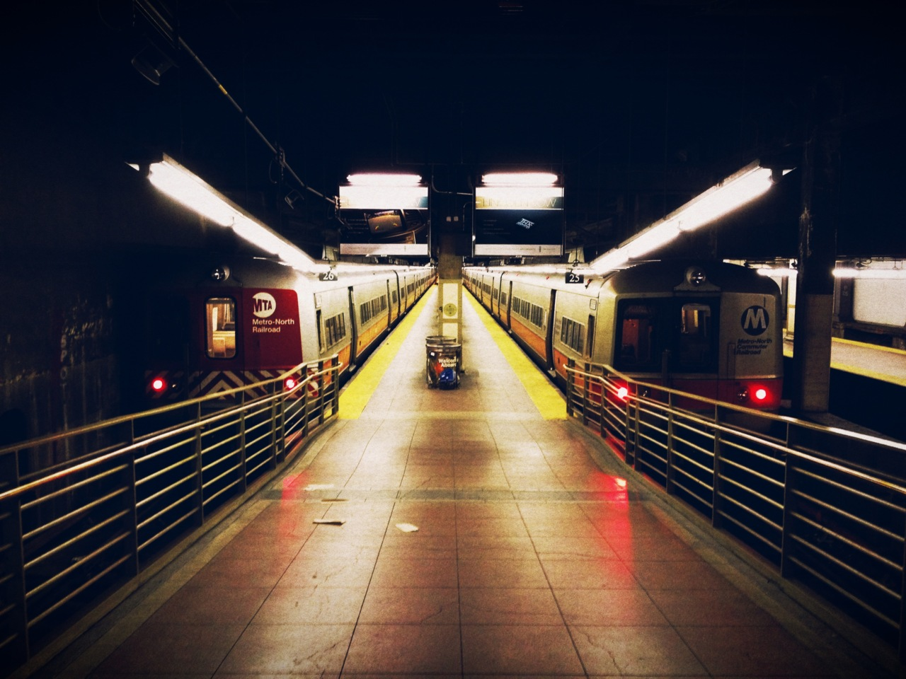
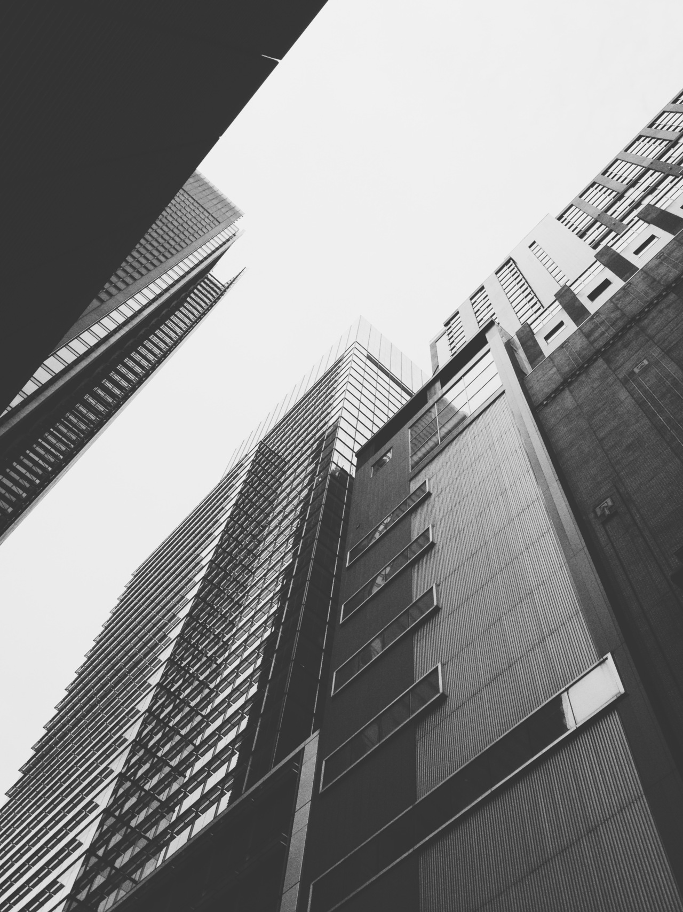
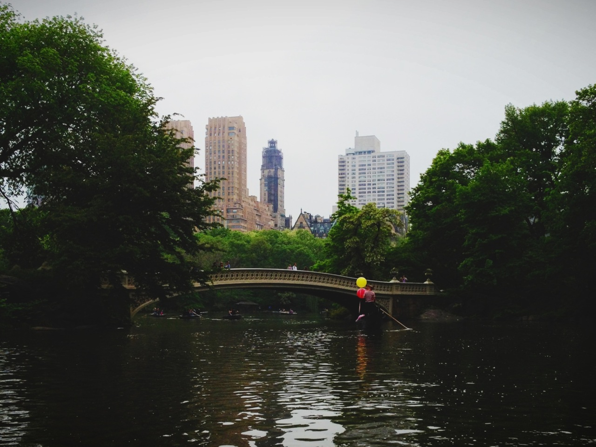

NYC | VSCO CAM
Last week while we were in NYC for Behance’s 99% Conference I fell in love with Visual Supply Co’s new VSCO CAM iPhone app. With minimal processing options VSCO CAM does a great job emulating the film styles for the likes of Kodak Tri-X, Fuji Superia, Ilford HP5 and many others. Here are a few shots I captured while exploring the city. Follow me on Instagram for other examples.